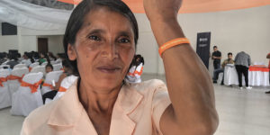
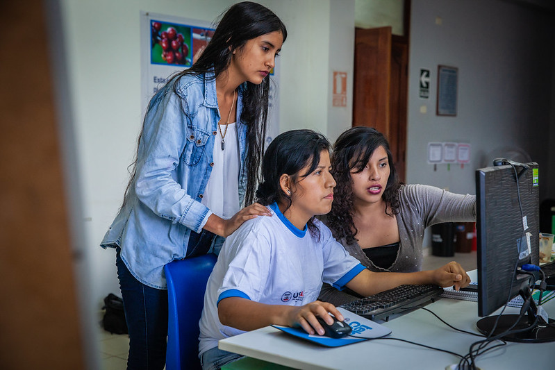

Digital Gender Divide
What is the digital gender divide?
The digital gender divide refers to the gap in access and use of the internet between women* and men, which can perpetuate and exacerbate gender inequalities and leave women out of an increasingly digital world. Despite the rapid growth of internet access around the globe (95% of people in 2023 live within reach of a mobile cellular network), women are still 6% less likely to use the internet compared to men; a gap that is actually widening in many low- and middle-income countries (LMICs) where, in 2023, women are 12% less likely than men to own a mobile phone and 19% less likely to actually access the internet on a mobile device.

Though it might seem like a relatively small gap, because mobile phones and smartphones have surpassed computers as the primary way people access the internet, that statistic translates to 310 million fewer women online in LMICs than men. Without access to the internet, women cannot fully participate in different aspects of the economy, join educational opportunities, and fully utilize legal and social support systems.
The digital gender divide does not just stop at access to the internet however; it is also the gap in how women and men use the internet once they get online. Studies show that even when women own mobile phones, they tend to use them less frequently and intensely than men, especially for more sophisticated services, including searching for information, looking for jobs, or engaging in civic and political spaces. Additionally, there is less locally relevant content available to women internet users, because women themselves are more often content consumers than content creators. Furthermore, women face greater barriers to using the internet in innovative and recreational ways due to unwelcoming online communities and cultural expectations that the internet is not for women and women should only participate online in the context of their duty to their families.
The digital gender divide is also apparent in the exclusion of women from leadership or development roles in the information and communications technology (ICT) sector. In fact, the proportion of women working in the ICT sector has been declining over the last 20 years. According to a 2023 report, in the United States alone, women only hold around 23% of programming and software development jobs, down from 37% in the 1980s. This contributes to software, apps, and tools rarely reflecting the unique needs that women have, further alienating them. Apple, for instance, whose tech employees were 75.1% male in 2022, did not include a menstrual cycle tracker in its Health app until 2019, five years after it was launched (though it did have a sodium level tracker and blood alcohol tracker during that time).
A NOTE ON GENDER TERMINOLOGY
All references to “women” (except those that reference specific external studies or surveys, which has been set by those respective authors) is gender-inclusive of girls, women, or any person or persons identifying as a woman.
Why is there a digital gender divide?
At the root of the digital gender divide are entrenched traditional gender inequalities, including gender bias, socio-cultural norms, lack of affordability and digital literacy, digital safety issues, and women’s lower (compared to men’s) comfort levels navigating and existing in the digital world. While all of these factors play a part in keeping women from achieving equity in their access to and use of digital technologies, the relative importance of each factor depends largely on the region and individual circumstances.
AffordabilityIn LMICs especially, the biggest barrier to access is simple: affordability. While the costs of internet access and of devices have been decreasing, they are often still too expensive for many people. While this is true for both genders, women tend to face secondary barriers that keep them from getting access, such as not being financially independent, or being passed over by family members in favor of a male relative. Even when women have access to devices, they are often registered in a male relative’s name. The consequences of this can range from reinforcing the idea that the internet is not a place for women to preventing women from accessing social support systems. In Rwanda, an evaluation of The Digital Ambassador Programme pilot phase found that the costs of data bundles and/or access to devices were prohibitively expensive for a large number of potential women users, especially in the rural areas.
Education is another major barrier for women all over the world. According to 2015 data from the Web Foundation, women in Africa and Asia who have some secondary education or have completed secondary school were six times more likely to be online than women with primary school or less.
Further, digital skills are also required to meaningfully engage with the Internet. While digital education varies widely by country (and even within countries), girls are still less likely to go to school over all, and those that do tend to have “lower self-efficacy and interest” in studying Science, Technology, Engineering and Math (STEM) topics, according to a report by UNICEF and the ITU, and STEM topics are often perceived as being ‘for men’ and are therefore less appealing to women and girls. While STEM subjects are not strictly required to use digital technologies, these subjects can help to expose girls to ICTs and build skills that help them be confident in their use of new and emerging technologies. Furthermore, studying these subjects is the first step along the pathway of a career in the ICT field, which is a necessary step to address inherent bias in technologies created and distributed largely by men. Without encouragement and confidence in their digital skills, women may shy away or avoid opportunities that are perceived to be technologically advanced, even when they do not actually require a high level of digital knowledge.
Social norms have an outsized impact on many aspects of the digital gender divide because they can also be a driving factor vis-à-vis other barriers. Social norms look different in different communities; in places where women are round-the-clock caregivers, they often do not have time to spend online, while in other situations women are discouraged from pursuing STEM careers. In other cases, the barriers are more strictly cultural. For example, a report by the OECD indicated that, in India and Egypt, around one-fifth of women believed that the Internet “was not an appropriate place for them” due to cultural reasons.
Online social norms also play a part in preventing women, especially those from LMICs, from engaging fully with the internet. Much of the digital marketplace is dominated by English and other Western languages, which women may have fewer opportunities to learn due to education inequalities. Furthermore, many online communities, especially those traditionally dominated by men, such as gaming communities, are unfriendly to women, often reaching the extent that women’s safety is compromised.
Scarcity of content that is relevant and empowering for women and other barriers that prevent women from participating freely and safely online are also fundamental aspects of the digital gender divide. Even when women access online environments, they face a disproportionate risk of gender-based violence (GBV) online: digital harassment, cyberstalking, doxxing, and the non-consensual distribution of images (e.g., “revenge porn”). Gender minorities are also targets of online GBV. Trans activists, for example, have experienced increased vulnerability in digital spaces, especially as they have become more visible and vocal. Cyber harassment of women is so extreme that the UN’s High Commissioner for Human Rights has warned, “if trends continue, instead of empowering women, online spaces may actually widen sex and gender-based discrimination and violence.”
This barrier is particularly harmful to democracy as the internet has become a key venue for political discussion and activism. Research conducted by the National Democratic Institute has demonstrated that women and girls at all levels of political engagement and in all democratic sectors, from the media to elected office, are affected by the “‘chilling effect’ that drives politically-active women offline and in some cases out of the political realm entirely.” Furthermore, women in the public eye, including women in politics and leadership positions are more often targeted by this abuse, and in many cultures, it is considered “the cost of doing business” for women who participate in the democratic conversation and is simply accepted.
“…if trends continue, instead of empowering women, online spaces may actually widen sex and gender-based discrimination and violence.”
How is the digital gender divide relevant in civic space and for democracy?
The UN recognizes the importance of women’s inclusion and participation in a digital society. The fifth Sustainable Development Goal (SDG) calls to “enhance the use of enabling technology, in particular information and communications technology, to promote the empowerment of women.” Moreover, women’s digital inclusion and technological empowerment are relevant to achieving quality education, creating decent work and economic growth, reducing inequality, and building peaceful and inclusive institutions. While digital technologies offer unparalleled opportunities in areas ranging from economic development to health improvement, to education, cultural development, and political participation, gaps in access to and use of these technologies and heightened safety concerns exacerbate gender inequalities and hinder women’s ability to access resources and information that are key to improving their lives and the wellbeing of their communities.
Further, the ways in which technologies are designed and employed, and how data are collected and used impact men and women differently, often because of existing disparities. Whether using technologies to develop artificial intelligence systems and implement data protection frameworks or just for the everyday uses of social media, gender considerations should be at the center of decision–making and planning in the democracy, rights, and governance space.
Initiatives that ignore gender disparities in access to the Internet and ownership and use of mobile phones and other devices will exacerbate existing gender inequalities, especially for the most vulnerable and marginalized populations. In the context of the Covid-19 pandemic and increasing GBV during lockdown, technology provided some with resources to address GBV, but it also created new opportunities for ways to exploit women and chill online discourse. Millions of women and non-binary individuals who faced barriers to accessing the internet and online devices were left with limited avenues to help, whether via instant messaging services, calls to domestic abuse hotlines, or discreet apps that provide disguised support and information to survivors in case of surveillance by abusers. Furthermore, the shift to a greater reliance on technology for work, school, medical attention, and other basic aspects of life further limited the engagement of these women in these aspects of society and exposed women who were active online to more online GBV.
Most importantly, initiatives in the civic space must recognize women’s agency and knowledge and be gender-inclusive from the design stage. Women must participate as co-designers of programs and be engaged as competent members of society with equal potential to devise solutions rather than perceived as passive victims.
Opportunities
There are a number of different areas to engage in that can have a positive impact in closing the digital gender divide. Read below to learn how to more effectively and safely think about some areas that your work may already touch on (or could include).
Widening job and education opportunitiesIn 2018, the ITU projected that 90% of future jobs will require ICT skills, and employers are increasingly citing digital skills and literacy as necessary for future employees according to the World Economic Forum. As traditional analog jobs in which women are overrepresented (such as in the manufacturing, service, and agricultural sectors) are replaced by automation, it is more vital than ever that women learn ICT skills to be able to compete for jobs. While digital literacy is becoming a requirement for many sectors, new, more flexible job opportunities are also becoming more common, and are eliminating traditional barriers to entry, such as age, experience, or location. Digital platforms can enable women in rural areas to connect with cities, where they can more easily sell goods or services. And part-time, contractor jobs in the “gig economy” (such as ride sharing, food delivery, and other freelance platforms) allow women more flexible schedules that are often necessitated by familial responsibilities.
The internet also expands opportunities for girls’ and womens’ educations. Online education opportunities, such as those for refugees, are reaching more and more learners, including girls. Online learning also gives those who missed out on education opportunities as children another chance to learn at their own pace, with flexibility in terms of time and location, that may be necessary given women’s responsibilities, and may allow women’s participation in the class to be more in proportion to that of men.
The majority of the world’s unbanked population is women. Women are more likely than men to lack credit history and the mobility to go to the bank. As such, financial technologies can play a large equalizing role, not only in terms of access to tools but also in terms of how financial products and services could be designed to respond to women’s needs. In the MENA region, for example, where 54% of men but only 42% of women have bank accounts, and up to 14 million unbanked adults in the region send or receive domestic remittances using cash or an over-the-counter service, opportunities to increase women’s financial inclusion through digital financial services are promising. Several governments have experimented with mobile technology for Government to People (G2P) payments. Research shows that this has reduced the time required to access payments, but the new method does not benefit everyone equally. When designing programs like this, it is necessary to keep in mind the digital gender divide and how women’s unique positioning will impact the effectiveness of the initiative.
There are few legal protections for women and gender-diverse people who seek justice for the online abuse they face. According to a 2015 UN Broadband Commission report, only one in five women live in a country where online abuse is likely to be punished. In many countries, perpetrators of online violence act with impunity, as laws have not been updated for the digital world, even when online harassment results in real-world violence. In the Democratic Republic of Congo (DRC), for instance, there are no laws that specifically protect women from online harassment, and women who have brought related crimes to the police risk being prosecuted for “ruining the reputation of the attacker.” And when cyber legislation is passed, it is not always effective. Sometimes it even results in the punishment of victimized women: women in Uganda have been arrested under the Anti-Pornography Act after ex-partners released “revenge porn” (nude photos of them posted without their consent) online. As many of these laws are new, and technologies are constantly changing, there is a need for lawyers and advocates to understand existing laws and gaps in legislation to propose policies and amend laws to allow women to be truly protected online and safe from abuse.
The European Union’s Digital Services Act (DSA), adopted in 2022, is landmark legislation regulating platforms. The act may force platforms to thoroughly assess threats to women online and enact comprehensive measures to address those threats. However, the DSA is newly introduced and how it is implemented will determine whether it is truly impactful. Furthermore, the DSA is limited to the EU, and, while other countries and regions may use it as a model, it would need to be localized.
Making the internet safe for women requires a multi-stakeholder approach. Governments should work in collaboration with the private sector and nonprofits. Technology companies have a responsibility to the public to provide solutions and support women who are attacked on their platforms or using their tools. Not only is this a necessary pursuit for ethical reasons, but, as women make up a very significant audience for these tools, there is consumer demand for solutions. Many of the interventions created to address this issue have been created by private companies. For example, Block Party was a tool created by a private company to give users the control to block harassment on Twitter. It was financially successful until Twitter drastically raised the cost of access to the Twitter API and forced Block Party to close. Despite financial and economic incentives to protect women online, currently, platforms are falling short.
While most platforms ban online gender based violence in their terms and conditions, rarely are there real punishments for violating this ban or effective solutions to protect those attacked.The best that can be hoped for is to have offending posts removed, and this is rarely done in a timely manner. The situation is even worse for non-English posts, which are often misinterpreted, with offensive slang ignored and common phrases censored. Furthermore, the way the reporting system is structured puts the burden on those attacked to sort through violent and traumatizing messages and convince the platform to remove them.
Nonprofits are uniquely placed to address online gendered abuse because they can and have moved more quickly than governments or tech companies to make and advocate for change. Nonprofits provide solutions, conduct research on the threat, facilitate security training, and develop recommendations for tech companies and governments. Furthermore, they play a key role in facilitating communication between all the stakeholders.
Digital-security education can help women (especially those at higher risk, like human rights defenders and journalists) stay safe online and attain critical knowledge to survive and thrive politically, socially, and economically in an increasingly digital world. However, there are not enough digital-safety trainers that understand the context and the challenges at-risk women face. There are few digital-safety resources that provide contextualized guidance around the unique threats that women face or have usable solutions for the problems they need to solve. Furthermore, social and cultural pressures can prevent women from attending digital-safety trainings. Women can and will be content creators and build resources for themselves and others, but they first must be given the chance to learn about digital safety and security as part of a digital-literacy curriculum. Men and boys, too, need training on online harassment and digital-safety education.
Digital platforms enable women to connect with each other, build networks, and organize on justice issues. For example, the #MeToo movement against sexual misconduct in the media industry, which became a global movement, has allowed a multitude of people to participate in activism previously bound to a certain time and place. Read more about digital activism in the Social Media primer.
Beyond campaigning for women’s rights, the internet provides a low-cost way for women to get involved in the broader democratic conversation. Women can run for office, write for newspapers, and express their political opinions with only a phone and an internet connection. This is a much lower barrier than the past, when reaching a large crowd required a large financial investment (such as paying for TV advertising), and women had less control over the message being expressed (for example, media coverage of women politicians disproportionately focusing on physical appearance). Furthermore, the internet is a resource for learning political skills. Women with digital literacy skills can find courses, blogs, communities, and tools online to support any kind of democratic work.
Risks

There are many factors that threaten to widen the digital gender divide and prevent technology from being used to increase gender equality.. Read below to learn about some of these elements, as well as how to mitigate the negative consequences they present for the digital gender divide.
Considering the digital gender divide a “women’s issue”The gender digital divide is a cross-cutting and holistic issue, affecting countries, societies, communities, and families, and not just as a “women’s issue.” When people dismiss the digital gender divide as a niche concern, it limits the resources devoted to the issue and leads to ineffective solutions that do not address the full scope of the problem. Closing the gender gap in access, use, and development of technology demands the involvement of societies as a whole. Approaches to close the divide must be holistic, take into account context-specific power and gender dynamics, and include active participation of men in the relevant communities to make a sustained difference.
Further, the gender digital divide should not be understood as restricted to the technology space, but as a social, political, and economic issue with far-reaching implications, including negative consequences for men and boys.
Women’s and girls’ education opportunities are more tenuous during crises. Increasing domestic and caregiving responsibilities, a shift towards income generation, pressure to marry, and gaps in digital-literacy skills mean that many girls will stop receiving an education, even where access to the internet and distance-learning opportunities are available. In Ghana, for example, 16% of adolescent boys have digital skills compared to only 7% of girls. Similarly, lockdowns and school closures due to the Covid-19 pandemic had a disproportionate effect on girls, increasing the gender gap in education, especially in the most vulnerable contexts. According to UNESCO, more than 111 million girls who were forced out of school in March 2020 live in the countries where gender disparities in education are already the highest. In Mali, Niger, and South Sudan, countries with some of the lowest enrolment and completion rates for girls, closures left over 4 million girls out of school.
Online GBV has proven an especially powerful tool for undermining women and women-identifying human-rights defenders, civil society leaders, and journalists, leading to self-censorship, weakening women’s political leadership and engagement, and restraining women’s self-expression and innovation. According to a 2021 Economist Intelligence Unit (EIU) report, 85% of women have been the target of or witnessed online violence, and 50% of women feel the internet is not a safe place to express their thoughts and opinions. This violence is particularly damaging for those with intersecting marginalized identities. If these trends are not addressed, closing the digital divide will never be possible, as many women who do get online will be pushed off because of the threats they face there. Women journalists, activists, politicians, and other female public figures are the targets of threats of sexual violence and other intimidation tactics. Online violence against journalists leads to journalistic self-censorship, affecting the quality of the information environment and democratic debate.
Online violence chills women’s participation in the digital space at every level. In addition to its impact on women political leaders, online harassment affects how women and girls who are not direct victims engage online. Some girls, witnessing the abuse their peers face online, are intimidated into not creating content. This form of violence is also used as a tool to punish and discourage women who don’t conform to traditional gender roles.
Solutions include education (training women on digital security to feel comfortable using technology and training men and boys on appropriate behavior in online environments), policy change (advocating for the adoption of policies that address online harassment and protect women’s rights online), and technology change (addressing the barriers to women’s involvement in the creation of tech to decrease gender disparities in the field and help ensure that the tools and software that are available serve women’s needs).
Disproportionate involvement of women in leadership in the development, coding, and design of AI and machine-learning systems leads to reinforcement of gender inequalities through the replication of stereotypes and maintenance of harmful social norms. For example, groups of predominantly male engineers have designed digital assistants such as Apple’s Siri and Amazon’s Alexa, which use women-sounding voices, reinforcing entrenched gender biases, such as women being more caring, sympathetic, cordial, and even submissive.
In 2019, UNESCO released “I’d blush if I could”, a research paper whose title was based on the response given by Siri when a human user addressed “her” in an extremely offensive manner. The paper noted that although the system was updated in April 2019 to reply to the insult more flatly (“I don’t know how to respond to that”), “the assistant’s submissiveness in the face of gender abuse remain[ed] unchanged since the technology’s wide release in 2011.” UNESCO suggested that by rendering the voices as women-sounding by default, tech companies were preconditioning users to rely on antiquated and harmful perceptions of women as subservient and failed to build in proper safeguards against abusive, gendered language.
Further, machine-learning systems rely on data that reflect larger gender biases. A group of researchers from Microsoft Research and Boston University trained a machine learning algorithm on Google News articles, and then asked it to complete the analogy: “Man is to Computer Programmer as Woman is to X.” The answer was “Homemaker,” reflecting the stereotyped portrayal and the deficit of women’s authoritative voices in the news. (Read more about bias in artificial intelligence systems in the Artificial Intelligence and Machine Learning Primer section on Bias in AI and ML).
In addition to preventing the reinforcement of gender stereotypes, increasing the participation of women in tech leadership and development helps to add a gendered lens to the field and enhance the ways in which new technologies can be used to improve women’s lives. For example, period tracking was first left out of health applications, and then, tech companies were slow to address concerns from US users after Roe v. Wade was repealed and period-tracking data privacy became a concern in the US.
Surveillance is of particular concern to those working in closed and closing spaces, whose governments see them as a threat due to their activities promoting human rights and democracy. Research conducted by Privacy International shows that there is a uniqueness to the surveillance faced by women and gender non-conforming individuals. From data privacy implications related to menstrual-tracker apps, which might collect data without appropriate informed consent, to the ability of women to privately access information about sexual and reproductive health online, to stalkerware and GPS trackers installed on smartphones and internet of things (IoT) devices by intimate partners, pervasive technology use has exacerbated privacy concerns and the surveillance of women.
Research conducted by the CitizenLab, for example, highlights the alarming breadth of commercial software that exists for the explicit purpose of covertly tracking another’s mobile device activities, remotely and in real-time. This could include monitoring someone’s text messages, call logs, browser history, personal calendars, email accounts, and/or photos. Education on digital security and the risks of data collection is necessary so women can protect themselves online, give informed consent for data collection, and feel comfortable using their devices.
Job losses caused by the replacement of human labor with automated systems lead to “technological unemployment,” which disproportionately affects women, the poor, and other vulnerable groups, unless they are re-skilled and provided with adequate protections. Automation also requires skilled labor that can operate, oversee, and/or maintain automated systems, eventually creating jobs for a smaller section of the population. But the immediate impact of this transformation of work can be harmful for people and communities without social safety nets or opportunities for finding other work.
Questions
Consider these questions when developing or assessing a project proposal that works with women or girls (which is pretty much all of them):
-
Have women been involved in the design of your project?
-
Have you considered the gendered impacts and unintended consequences of adopting a particular technology in your work?
-
How are differences in access and use of technology likely to affect the outcomes of your project?
-
Are you employing technologies that could reinforce harmful gender stereotypes or fail the needs of women participants?
-
Are women exposed to additional safety concerns (compared to men) brought about by the use of the tools and technologies adopted in your project?
-
Have you considered gaps in sex- or gender-disaggregated data in the dataset used to inform the design and implementation of your project? How could these gaps be bridged through additional primary or secondary research?
-
How can your project meaningfully engage men and boys to address the gender digital divide?
-
How can your organization’s work help mitigate and eventually close the gender digital divide?
Case studies
There are many examples of programs that are engaging with women to have a positive effect on the digital gender divide. Find out more about a few of these below.
USAID’s WomenConnect ChallengeIn 2018, USAID launched the WomenConnect Challenge to enable women’s access to, and use of, digital technologies. The first call for solutions brought in more than 530 ideas from 89 countries, and USAID selected nine organizations to receive $100,000 awards. In the Republic of Mozambique, the development-finance institution GAPI lowered barriers to women’s mobile access by providing offline Internet browsing, rent-to-own options, and tailored training in micro-entrepreneurship for women by region. Another first round awardee, AFCHIX, created opportunities for rural women in Kenya, Namibia, Sénégal, and Morocco to become network engineers and build their own community networks or Internet services. AFCHIX won another award in the third round of funding, which the organization used to integrate digital skills learning into community networks to facilitate organic growth of women using digital skills to create socioeconomic opportunities. The entrepreneurial and empowerment program helps women establish their own companies, provides important community services, and positions these individuals as role models.
In 2017, Internews and DefendDefenders piloted the Safe Sisters program in East Africa to empower women to protect themselves against online GBV. Safe Sisters is a digital-safety training-of-trainers program that provides women human rights defenders and journalists who are new to digital safety with techniques and tools to navigate online spaces safely, assume informed risks, and take control of their lives in an increasingly digital world. The program was created and run entirely by women, for women. In it, participants learn digital-security skills and get hands-on experience by training their own at-risk communities.
In building the Safe Sisters model, Internews has proven that, given the chance, women will dive into improving their understanding of digital safety, use this training to generate new job opportunities, and share their skills and knowledge in their communities. Women can also create context- and language-specific digital-safety resources and will fight for policies that protect their rights online and deter abuse. There is strong evidence of the lasting impact of the Safe Sisters program: two years after the program launched, 80% of the pilot cohort of 13 women were actively involved in digital safety; 10 had earned new professional opportunities because of their participation; and four had changed careers to pursue digital security professionally.
In 2015, Google India and Tata Trusts launched Internet Saathi, a program designed to equip women (known as Internet Saathis) in villages across the country with basic Internet skills and provide them with Internet-enabled devices. The Saathis then train other women in digital literacy skills, following the ‘train the trainer’ model. As of April 2019, there were more than 81,500 Internet Saathis who helped over 28 million women learn about the Internet across 289,000 villages. Read more about the Saathis here.
Girls in Tech is a nonprofit with chapters around the world. Its goal is to close the gender gap in the tech development field. The organization hosts events for girls, including panels and hackathons, which serve the dual purpose of encouraging girls to participate in developing technology and solving local and global issues, such as environmental crises and accessibility issues for people with disabilities. Girls in Tech gives girls the opportunity to get involved in designing technology through learning opportunities like bootcamps and mentorship. The organization hosts a startup pitch competition called AMPLIFY, which gives girls the resources and funding to make their designs a reality.
Women in Tech is another international nonprofit and network with chapters around the globe that supports Diversity, Equity, and Inclusion in Science, Technology, Engineering, Arts, and Mathematics fields. It does this through focuses on Education – training women for careers in tech, including internships, tech awareness sessions, and scholarships; Business – including mentoring programs for women entrepreneurs, workshops, and incubation and acceleration camps; Social Inclusion – ensuring digital literacy skills programs are reaching marginalized groups and underprivileged communities; and Advocacy – raising awareness of the digital gender divide issue and how it can be solved.
The International Telecommunications Union (ITU), GSMA, the International Trade Centre, the United Nations University, and UN Women founded the EQUALS Global Partnership to tackle the digital gender divide through research, policy, and programming. EQUALS breaks the path to gender equality in technology into four core issue areas; Access, Skills, Leadership, and Research. The Partnership has a number of programs, some in collaboration with other organizations, to specifically target these issue areas. One research program, Fairness AI, examines bias in AI, while the Digital Literacy Pilot Programmes, which are the result of collaboration between the World Bank, GSMA, and the EQUALS Access Coalition, are programs focused on teaching digital literacy to women in Rwanda, Uganda, and Nigeria. More information about EQUALS Global Partnership’s projects can be found on the website.
Many initiatives to address the digital gender divide utilize trainings to empower girls and women to feel confident in tech industries because simply accessing technology is only one factor contributing to the divide. Because cultural obligations often play a key role and because technology is more intimidating when it is taught in a non-native language, many of these educational programs are localized. One example of this is the African Girls Can Code Initiative (AGCCI), created by UN Women, the African Union Commission (AUC), and the ITU. The Initiative trains women and girls between the ages of 17 and 25 in coding and information, communications, and technology (ICT) skills in order to encourage them to pursue an education and career in these fields. AGCCI works to close the digital gender divide through both increasing women and girls’ knowledge of the field and mainstreaming women in these fields, tackling norms issues.
Many interventions to encourage women’s engagement in technology also use mentorship programs. Some use direct peer mentorship, while others connect women with role models through interviews or conferences. Utilizing successful women is an effective solution because success in the tech field for women requires more than just tech skills. Women need to be able to address gender and culture-specific barriers that only other women who have the same lived experiences can understand. Furthermore, by elevating mentors, these interventions put women tech leaders in the spotlight, helping to shift norms and expectations around women’s authority in the tech field. The Women in Cybersecurity Mentorship Programme is one example. This initiative was created by the ITU, EQUALS, and the Forum of Incident Response and Security Teams (FIRST). It elevates women leaders in the cybersecurity field and is a resource for women at all levels to share professional best practices. Google Summer of Code is another, broader (open to all genders) mentorship opportunity. Applicants apply for mentorship on a coding project they are developing and mentors help introduce them to the norms and standards of the open source community, and they develop their projects as open source.
Outreachy is an internship program that aims to increase diversity in the open source community. Applicants are considered if they are impacted by underrepresentation in tech in the area in which they live. The initiative includes a number of different projects they can work on, lasts three months, and are conducted remotely with a stipend of 7000 USD to decrease barriers for marginalized groups to participate.
The USAID/Microsoft Airband Initiative takes localized approaches to addressing the digital gender divide. For each region, partner organizations, which are local technology companies, work in collaboration with local gender inequality experts to design a project to increase connectivity, with a focus on women’s connectivity and reducing the digital gender divide. Making tech companies the center of the program helps to address barriers like determining sustainable price points. The second stage of the program utilizes USAID and Microsoft’s resources to scale up the local initiatives. The final stage looks to capitalize on the first two stages, recruiting new partners and encouraging independent programs.
The UN Women’s Second Chance Education (SCE) Programme utilizes e-learning to increase literacy and digital literacy, especially of women and girls who missed out on traditional education opportunities. The program was piloted between 2018 and 2023 in six countries of different contexts, including humanitarian crises, middle income, and amongst refugees, migrants, and indigenous peoples. The pilot has been successful overall, but access to the internet remains a challenge for vulnerable groups, and blended learning (utilizing both on and offline components) was particularly successful, especially in adapting to the unique needs, schedules, and challenges participants faced.
References
Find below the works cited in this resource.
- (2015). Continuing to Power Economic Growth. Attracting more young women into Science and Technology 2.0.
- Alfaro, Maria Jose Ventura. (2020). Feminist solidarity networks have multiplied since the Covid-19 outbreak in Mexico. Interface Journal.
- Anderson, Sydney. (2015). India’s Gender Digital Divide: Women and Politics on Twitter. ORF Issue Brief.
- Association for Progressive Communications (APC). (2017). Bridging the Gender Digital Divide from a Human Rights Perspective.
- Avila, Renata et al. (2018). Artificial Intelligence: Open Questions About Gender Inclusion. World Wide Web Foundation.
- Dyck, Cheryl Miller Van. (2017). The Digital Gender Divide Is an Economic Problem for Everyone. GE.
- Economist Intelligence Unit. (2021). Measuring the Prevalence of Online Violence Against Women.
- EQUALS & UN University. (2019). Taking Stock: Data and Evidence on Gender Equality in Digital Access, Skills, and Leadership.
- EQUALS & UNESCO. (2019). I’d Blush If I Could: Closing Gender Divides in Digital Skills through Education.
- (2019). 10 Lessons Learnt: Closing the Gender Gap in Internet Access and Use, Insights From the EQUALS Access Coalition.
- Global Diversity Practice. (2023). Where are the women in STEM?
- GSM Association. (2020). Connected Women: The Mobile Gender Gap Report.
- (2023). The Mobile Gender Gap Report 2023.
- International Telecommunications Union (ITU). (2022). Facts and Figures 2022 – Mobile Network Coverage
- Khoo, Cynthia, Robertson, Kate & Ron Deibert. (2019). Installing Fear: A Canadian Legal and Policy Analysis of Using, Developing, and Selling Smartphone Spyware and Stalkerware Applications. Citizen Lab.
- National Democratic Institute. (2019). Tweets That Chill: Analyzing Online Violence Against Women in Politics.
- National Democratic Institute. (2021). #NotTheCost – Stopping Violence Against Women in Politics: A Renewed Call to Action.
- National Democratic Institute. (2022). Interventions to End Online Violence Against Women in Politics.
- Organisation for Economic Co-operation and Development (OECD). (2018). Bridging the Digital Gender Divide: Include, Upskill, Innovate.
- The World Bank. (2022). Covid-19 Drives Global Surge in Use of Digital Payments.
- Giannini, Stefania. (2020). Covid-19 school closures around the world will hit girls hardest. UNESCO.
- UNICEF & The International Telecommunication Union (ITU). (2020). Towards an equal future: Reimagining girls’ education through STEM.
- United States Department of State. (2019). Inclusive Technology: The Gender Digital Divide, Human Rights & Violence Against Women.
- (2020). USAID Digital Strategy.
- Womentech network. (2023) Women in Technology Statistics 2023.
- World Economic Forum. (2023) Future of Jobs Report.
Additional Resources
- Internews and DefendDefenders’ Safe Sisters.
- Privacy International’s work on gender and surveillance.
All references to “women” (except those that reference specific external studies or surveys, which have been set by those respective authors) are gender-inclusive of girls, women, or any person or persons identifying as a woman.
While much of this article focuses on women, people of all genders are harmed by the digital gender divide, and marginalized gender groups that do not identify as women face some of the same challenges utilizing the internet and have some of the same opportunities to use the internet to address offline barriers.